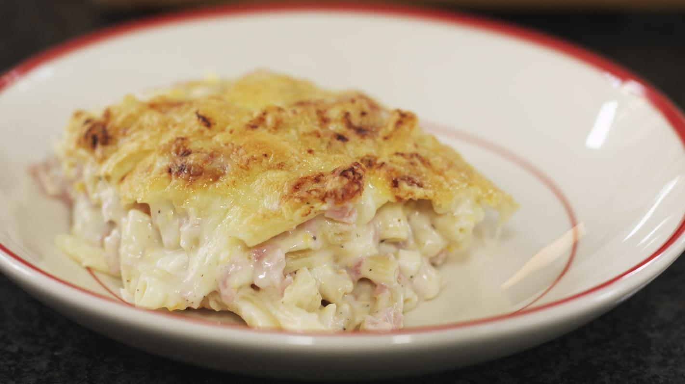

Macaroni met kaas en hesp
Ingrediënten
- 450 gr macaroni
- 300 gr gekookte ham
- 400 gr gemalen kaas
- 5 eieren
- 30 gr boter
- 40 gr bloem
- 6 dl melk
- 1 dl room
- 1 citroen
Bereiding
- Breng water aan de kook in een pannetje of een kleine pot. Dompel de eieren onder in het kokende water en kook ze hard in zo’n 8 à 9 minuten. Koel de eitjes in koud water en hou ze even opzij.
- Breng ook een ruime pot met water aan de kook om de macaroni te garen. Voeg een flinke scheut zout toe.
- De basis van de saus is een roux. Smelt de boter in een kookpot en voeg er vervolgens de bloem aan toe. Laat het bloemmengsel al roerend “opdrogen”, maar let erop dat de roux niet aanbakt.
- odra je de zachte geur van biscuit ruikt, schenk je de melk in de pot. Zet het vuur wat zachter en blijf geduldig doorroeren met een garde tot de saus bindt. Schenk tussendoor ook de room bij de saus. Na voldoende lang roeren, krijg je een gladde romige bechamelsaus.
- Haal de pot van het vuur en meng de helft van de gemalen kaas door de saus. (Hou de andere helft van de kaas opzij voor het gratineren van de schotel.)
- Proef en kruid de kaassaus met vers geraspte nootmuskaat, peper van de molen en wat zout.
- Werk de saus af met een klein scheutje vers citroensap. Dat geeft de saus een lichtere en frisse toets.
- Kook de macaroni al dente. Hou er rekening mee dat de pasta later nog even de oven in gaat, waardoor de macaroni nog een beetje verder zal garen.
- Pel intussen de hardgekookte eieren en doe ze in een schaal. Plet de eieren met een pureestamper (of een vork). Het hoeft geen eierpuree te worden: er mogen gerust nog enkele stukjes in achterblijven.
- Verwijder de zwoerden van de gekookte ham en snij de plakjes (of het blokje) ham in reepjes of kubusjes.
- Giet de pasta af en meng de kaassaus eronder. Voeg ook de geplette eieren toe en de reepjes of blokjes ham. Roer alles goed om en stort het mengsel in een ovenschaal.
- Strooi de rest van de gemalen kaas gelijkmatig over de schotel en plaats het gerecht onder de hete grill van je oven.
-
Zodra de kaas een goudbruin korstje is geworden, kan je aan tafel.